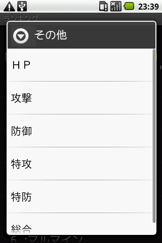

この画面ではポケモン一覧と同様にポケモンをリスト表示します。異なる点は種族値を元にしたランキング表示を行う点です。
画面上部にあるテキストボックス及びシークバーでリストに表示されるポケモンの下限が設定できます。テキストボックスに直接数値を入力した場合、入力した値を超えない最も近い種族値に補完します。
リスト表示されているポケモンをクリック(タップ)することでポケモン情報に画面が切り替わります。
メニューからフィルタリング、フィルタリングのクリア、ステータスの切り替え、他画面への切り替え、ヘルプが行えます。
フィルタメニューから、タイプ、特性、習得わざ、地方によるリストのフィルタリングが行えます。
フィルタで設定した内容及び、フィルタリング後のリストをリセットします。
メニューに表示されている「素早」及び、「その他」からランキングに使用するステータスを切り替えられます。「その他」をクリック後さらに「ＨＰ」「攻撃」「防御」「特攻」「特防」「総合」のいずれかを選択します。
